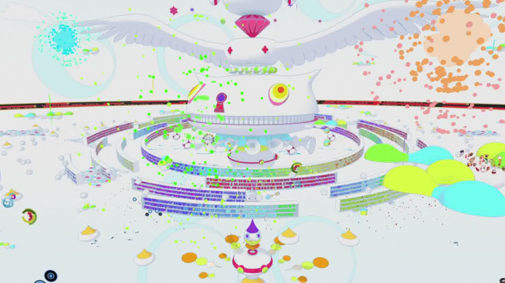

Can Cool Japan save Post-Disaster Japan? On the Possibilities and Impossibilities of a Cool Japanology

On Cool Japan
International Journal of Japanese Sociology
Volume 20, Issue 1, pages 59–72, November 2011
DOI: 10.1111/j.1475-6781.2011.01148.x
2011
Can Cool Japan save Post-Disaster Japan? On the Possibilities and Impossibilities of a Cool Japanology
10/27/11
This article considers Cool Japan in light of catastrophe, first theoretically through a phenomenological analysis of Cool Japan and Cool Japanology, suggesting that the study of Cool Japan itself is way of uncooling the object of inquiry, itself a reaction to the apocalyptic realities of everyday life since the dawn of the modern world. The article finishes with a sociological reflection on current events through a détourner of the sekai kei genre in Summer Wars' inclusion of two sociological types in its rendition of catastrophe. This article then is intended as a preliminary step to understanding the specificity and commonalities of Japanese cool power through an understanding of the phenomenon of cool and the contents to which cool often refers.